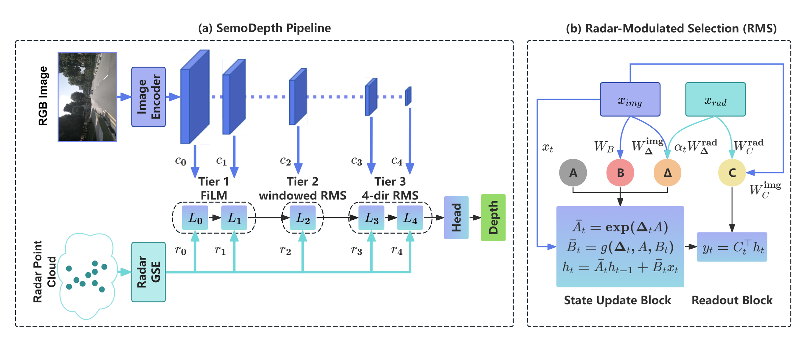
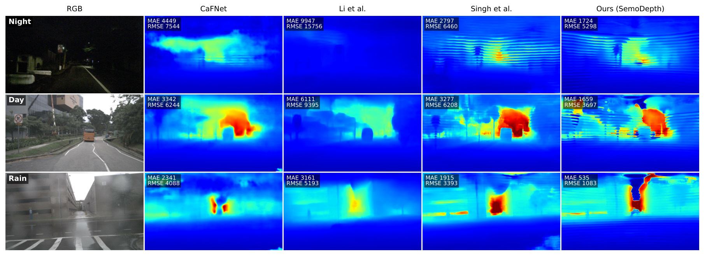
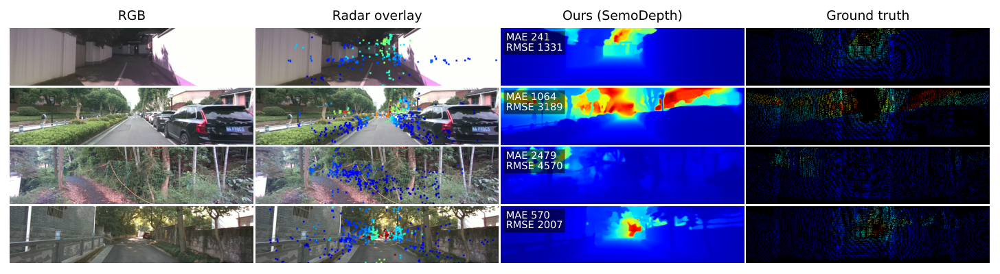

SemoDepth overview. (a) Pipeline. A ResNet-34 image encoder and a PCA-GM radar GSE produce the image pyramid $c_0,\dots,c_4$ and a single radar feature map whose level-wise projections form the radar pyramid $r_0,\dots,r_4$. The Multi-View Scan Pyramid (MVSP) allocates fusion by resolution: FiLM modulation at the finest levels (Tier 1), radar-centred windowed RMS at the mid level (Tier 2), and full-image four-direction RMS at the coarsest levels (Tier 3). (b) Radar-Modulated Selection (RMS). Radar enters via additive modulations to the step size $\boldsymbol{\Delta}_t$ and readout $\mathbf{C}_t$ (dashed red), while the input projection $\mathbf{B}_t$ and state-evolution matrix $\mathbf{A}$ remain image-only (blue). All radar projections are zero-initialised, so at step 0 the block is bit-equivalent to vanilla Mamba.
Radar-camera depth estimation must turn an ultra-sparse, all-weather, metric radar signal into a dense per-pixel depth map. Existing methods — concatenation, confidence-aware gating, sparse supervision, graph-based extraction — combine radar and image features outside the backbone's sequence operator, and even cross-modal Mamba variants leave the selection mechanism itself unimodal. We argue that the selection mechanism is the right place for radar to enter.
We introduce Radar-Modulated Selection (RMS), a minimal way to inject radar into Mamba's selective scan: radar modulates the scan from within, adding zero-initialised perturbations to the step size Δ and readout C while leaving the input projection B and state dynamics A image-only. The construction is exactly equivalent to a pretrained image-only Mamba at initialisation, so radar only influences the model where it improves accuracy. Two further properties follow that out-of-scan fusion cannot offer: linear-cost cross-modal coupling at every recurrence step, and a natural fallback to the image-only backbone when radar is absent.
We deploy RMS in a Multi-View Scan Pyramid (MVSP) that matches the fusion operator to radar's spatial reach at each scale. SemoDepth achieves state-of-the-art on nuScenes, reducing MAE by 34.0%, 29.9%, and 29.9% over the previous best at the 50 m, 70 m, and 80 m evaluation ranges, while attaining the lowest single-frame latency (26.8 ms). A further ablation shows that out-of-scan feature blending adds no accuracy on top of RMS — empirical validation that in-scan selection can replace out-of-scan fusion.
Inside each Mamba block, radar features contribute additive, zero-initialised modulations to the per-token step size Δ (memory horizon) and readout C (what the state emits), while the input projection B and state matrix A stay strictly image-driven. The block is bit-equivalent to vanilla Mamba at step zero, so the pretrained image-only solution is preserved exactly — radar gradient flows only where it earns accuracy.
A three-tier decoder matches the fusion operator to radar's reach at each resolution: scene-wide four-direction RMS at the coarsest scales, radar-centred windowed RMS at the mid scale, and constant-cost FiLM at the finest scales. Radar stays live at every level, with scan compute concentrated where radar evidence has the longest reach. Replacing the two scan tiers with FiLM degrades MAE@80 by 18%.
| Range | Method | MAE (mm) ↓ | RMSE (mm) ↓ |
|---|---|---|---|
| 0–50 m | TacoDepth (CVPR'25) | 1423.6 | 3275.8 |
| SemoDepth (ours) | 940.1 ±4.1 | 2785.7 ±2.5 | |
| 0–70 m | TacoDepth (CVPR'25) | 1712.6 | 3960.5 |
| SemoDepth (ours) | 1199.8 ±1.5 | 3622.4 ±16.5 | |
| 0–80 m | TacoDepth (CVPR'25) | 1833.4 | 4150.2 |
| SemoDepth (ours) | 1285.2 ±0.9 | 3935.4 ±21.5 |
SemoDepth numbers are mean ± std over 3 seeds. Single-frame latency: 26.8 ms (lowest among methods with public releases). See the arXiv preprint for the full per-method table.
| Range | Method | MAE (mm) ↓ | RMSE (mm) ↓ |
|---|---|---|---|
| 0–50 m | TacoDepth (CVPR'25) | 1120.1 | 2686.7 |
| SemoDepth (ours) | 1029.2 | 2631.6 | |
| 0–70 m | TacoDepth (CVPR'25) | 1181.8 | 2906.3 |
| SemoDepth (ours) | 1111.6 | 2946.9 | |
| 0–80 m | TacoDepth (CVPR'25) | 1201.1 | 2990.7 |
| SemoDepth (ours) | 1137.2 | 3053.0 |
Baseline numbers as reported by TacoDepth. SemoDepth attains the best MAE at every range and the best RMSE@50; TacoDepth retains a slight edge on RMSE@70 (+1.4%) and RMSE@80 (+2.1%).

nuScenes. RGB input, predictions from competing methods, SemoDepth, and accumulated LiDAR ground truth (rightmost). SemoDepth recovers thin structures (poles, sign posts) and metric scale on distant vehicles where prior methods over-smooth.

ZJU-4DRadarCam. Campus-driving scenes with 4D radar. SemoDepth transfers without architectural changes, only swapping the dataset's depth ceiling.
@article{hou2026semodepth,
title = {Selection, Not Fusion: Radar-Modulated State Space Models for Radar-Camera Depth Estimation},
author = {Hou, Zhangcheng and Ohtsuki, Tomoaki},
journal = {arXiv preprint arXiv:2605.11840},
year = {2026}
}